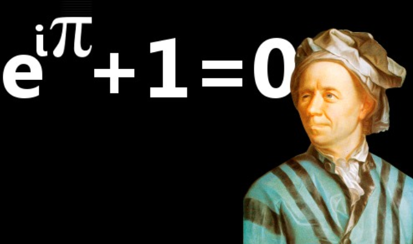

Identidad de Euler (belleza matemática): 1748
Leonhard Euler Euler introdujo o popularizó muchos de los términos matemáticos con los que estamos familiarizados hoy. Descubrió la igualdad que muchos matemáticos consideran la más hermosa jamás descubierta, la Identidad de Euler, que relaciona los cinco números más importantes de las matemáticas.
Volver a la página principal